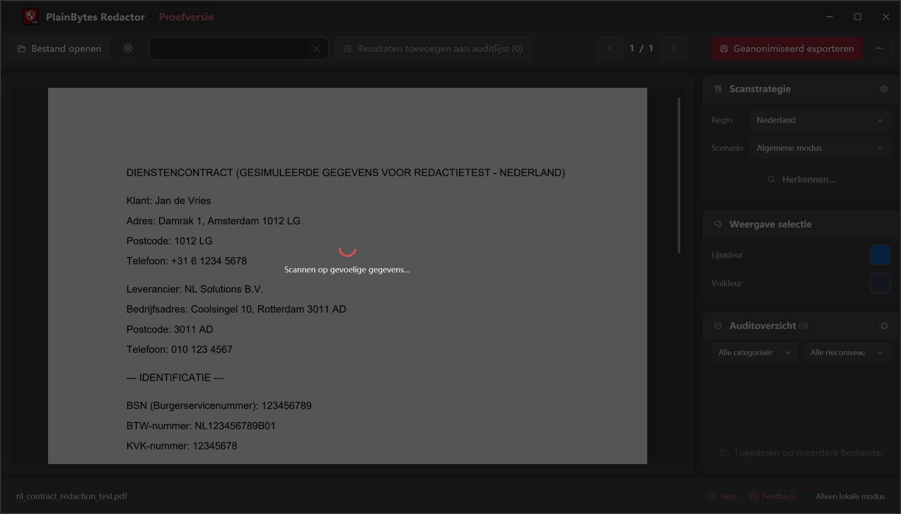
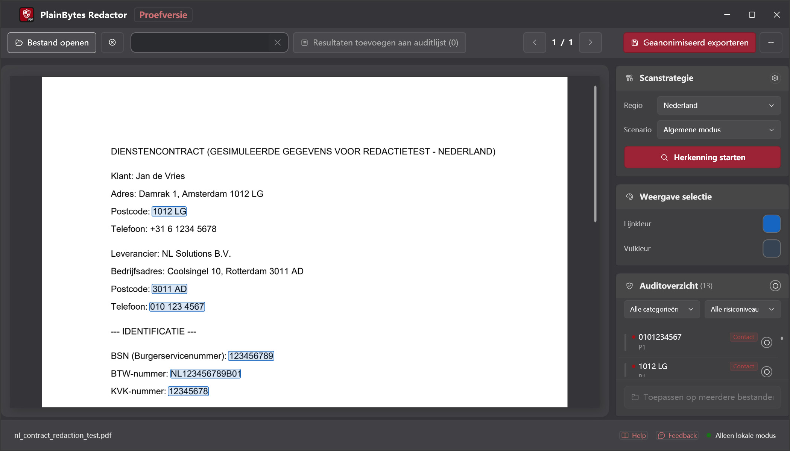
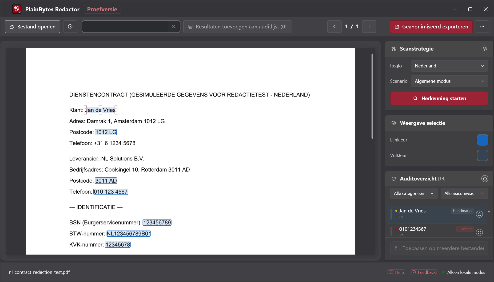
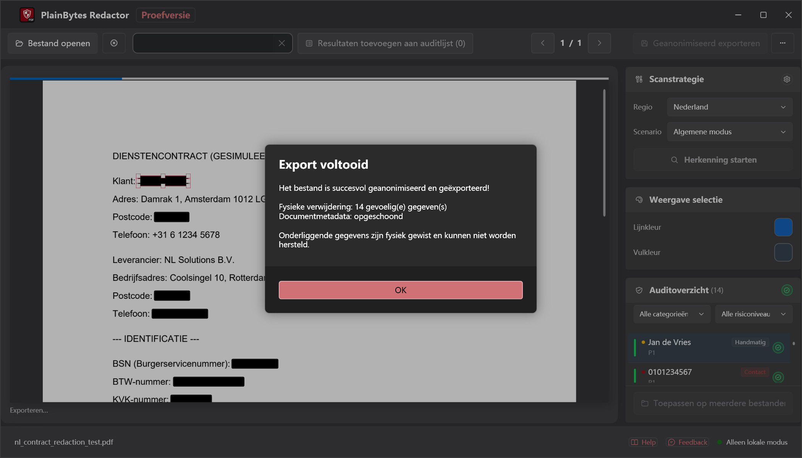

01
Openen en scannen
Laad een PDF en voer detectie uit voor de formaten in uw regio.
PlainBytes Redactor
PlainBytes Redactor draait volledig op je computer — geen cloud-upload, geen AI-dienst die je bestanden ziet. Automatische detectie voor identificatieformaten uit 28 landen, plus handmatige controle vóór export.
10 dagen gratis proberen · Eenmalige aankoop · Geen abonnement
Zo werkt het

Laad een PDF en voer detectie uit voor de formaten in uw regio.

Bekijk elk gemarkeerd item met de bijbehorende risicocategorie.

Voeg toe, verwijder of verfijn vóór afronding.

Inhoud en metadata permanent verwijderd.
De meeste redactietools — vooral AI-gestuurde — uploaden je documenten naar een server voordat ze gevoelige informatie kunnen vinden en verwijderen. Voor wie gebonden is aan vertrouwelijkheid, privilege of auditonafhankelijkheid, hoort dat geen risico te zijn alleen om een bestand te redigeren.
PlainBytes Redactor voert alle detectie en verwerking uit op je apparaat. Je bestanden verlaten je computer nooit — geen account, geen sync, geen server.
Voor advocaten
Redigeer SSN, financiële gegevens en andere PII vóór e-filing of discovery-deling, zonder klantbestanden via cloud van derden te leiden.
Voor accountants
Redigeer rekeningnummers, SSN en financiële klantgegevens vóór het delen van audit working papers, belastingaangiften of jaarverslagen — zonder klantgegevens via cloud van derden te leiden.
Voor HR-teams
Redigeer salarisbedragen, SSN en persoonlijke gegevens vóór het delen van aanbiedingsbrieven, beëindigingsdossiers of personeelsbestanden met auditors, juridisch adviseurs of bij datverzoeken.